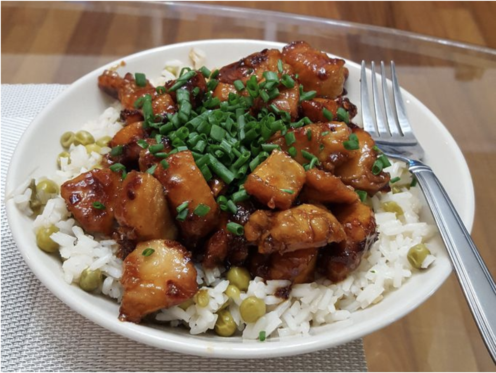

Honey Glazed Chicken

Description
This recipe is based on a template found on allrecipes.com
and is a great way for beginner chefs to get into styling their chicken. Honey Glazed Chicken is usually served on a bed of steamed rice.
This recipe is fairly simple and does not take long to make.
Ingredients
- ¼ cup honey
- 2 tablespoons soy sauce
- ⅛ teaspoon red pepper flakes
- 1 ½ tablespoons olive oil
- 2 skinless, boneless chicken breast halves, cut into bite-size pieces
Steps
- Gather the ingredients.
- Whisk soy sauce, honey, and red pepper flakes in a bowl and set aside.
- Pour olive oil into a skillet over medium heat and let sit then cook and stir chicken in hot oil until brown (approximately 5 minutes).
- Pour honey mixture into skillet; continue to cook and stir chicken until it is no longer pink inside and sauce is thick (approximately another 5 minutes).
- Serve hot.